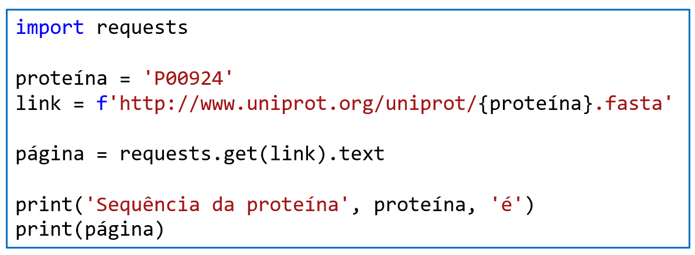
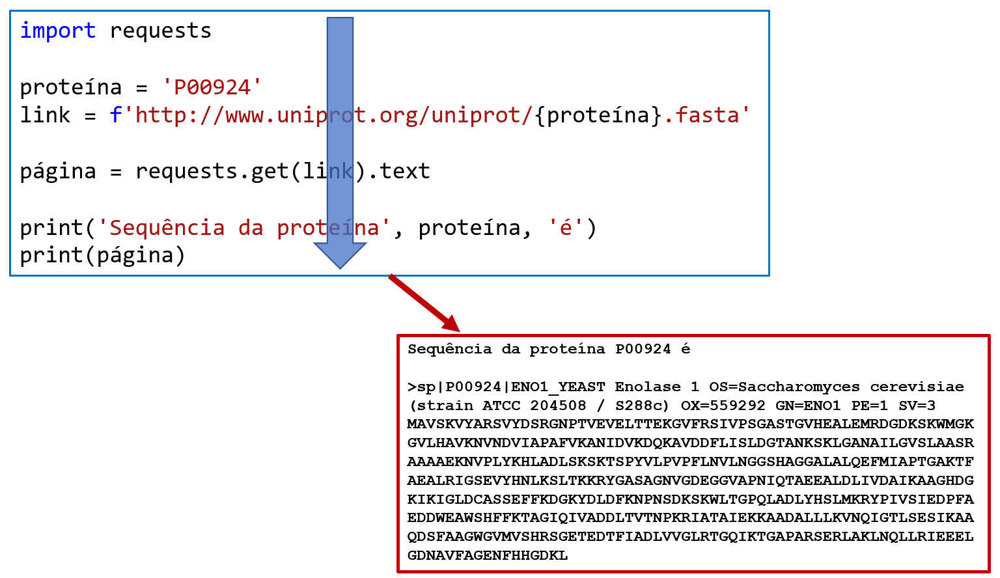
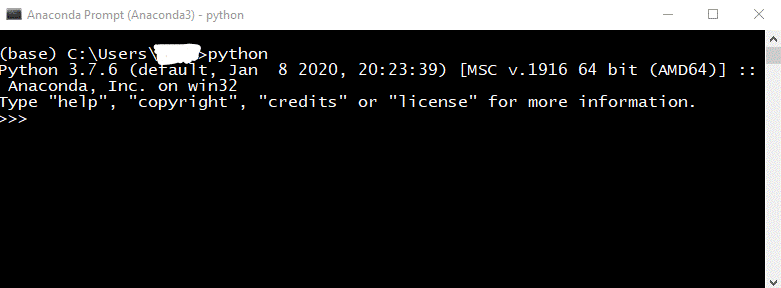
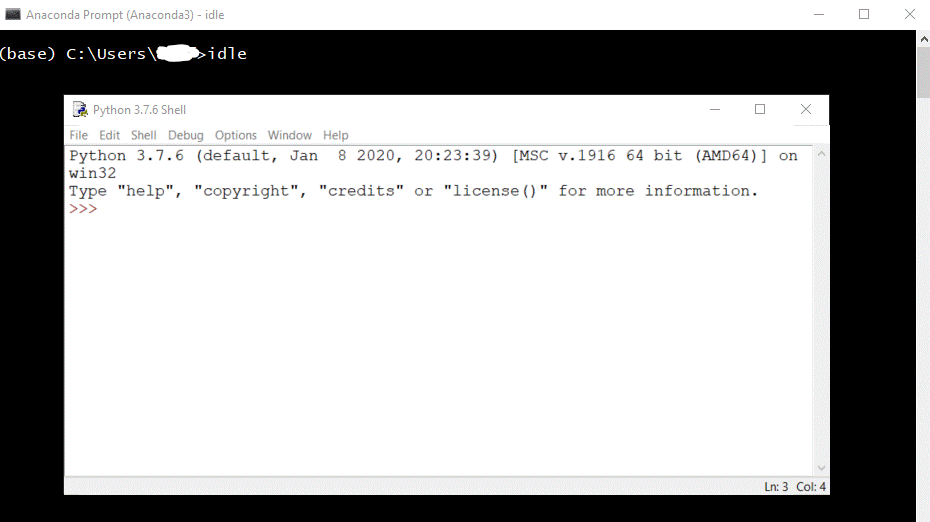
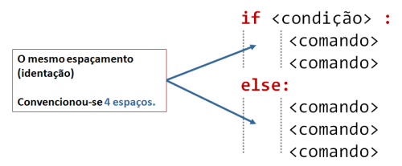
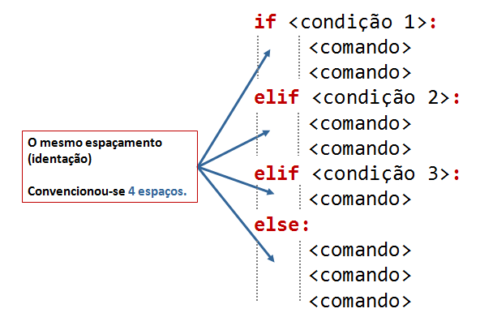

Conceitos básicos¶
Programas como textos¶
Um programa é simplesmente um texto escrito numa linguagem de programação, por exemplo na linguagem Python.
Na linguagem Python, esse texto é interpretável por um computador como um conjunto de "comandos" de "ordens" para serem executados.

Quando "corremos" ou "executamos" um programa essas ordens são executadas (a grande velocidade, diga-se) e o programa produz um resultado.

Os comandos são executados um a um à medida que aparecem no texto ("de cima para baixo"), embora esta ordem possa ser alterada por indicações especiais capazes de repetir comandos ou executar comandos em alternativa, como veremos mais tarde.
Objetos e nomes¶
Objetos fundamentais: números e strings¶
Para as primeiras impressões sobre a linguagem Python começaremos não por escrever e executar pequenos programas mas por usar um modo interativo chamado a Python Shell.
Neste modo interativo, escrevem-se comandos que são executados imediatamente originando um resultado.
Tendo uma distribuição da linguagem Python instalada, podemos iniciar uma Python shell numa janela de terminal ("linha de comando", "shell").
No sistema Windows, por exemplo, usando a Anaconda Prompt da distribuição Anaconda escrevemos
python
para iniciar uma Python shell.

Como alternativa, podemos iniciar uma aplicação que contem uma Python shell chamada Idle, escrevendo
idle

Reconhece-se a Python shell por apresentar
>>>
a indicar que podemos escrever um comando do Python.
Ao terminar o comando com Enter obtemos imediatamente uma resposta.
Vamos experimentar alguns comandos.
Muitas vezes, os comandos da linguagem Python consistem na manipulação daquilo que se designa genericamente por objetos (virtuais, claro).
Estes objetos são valores que estão representados na memória do computador, num determinado momento durante a execução do programa.
Números¶
Números são uns dos objetos mais fundamentais da linguagem Python. Podemos usar a Python Shell como uma calculadora. Experimente estes comandos:
>>> 45 + 32 77 >>> 3.27 * 0.18 0.5886 >>> (1 + 5**0.5) / 2 1.618033988749895 >>>
Numa expressão envolvendo números, podemos usar (vários níveis de) parêntesis curvos () e as cinco operações:
+ adição
- subtração
* multiplicação
/ divisão
** potenciação
As regras de prioridade são: ** tem maior prioridade do que * / que têm maior prioridade do que + -. Em caso de “empate” e sem parêntesis, os cálculos são feitos da esquerda para a direita.
Também útil é o operador %, que significa "o resto da divisão por". Por exemplo, 5 % 3 tem como
resultado 2.
Naturalmente, podemos trabalhar com números com casas decimais, designados genericamente como números em vírgula flutuante.
Na gíria é muitas vezes usada a designação floats.
>>> 4.2 * 0.01 0.042 >>> 4.2 * 1e-2 0.042 >>> 4.2e3 - 2e2 4000.0
Note a utilização da representação “de engenharia”, por exemplo 4.2e3, equivalente a 4.2 x 103.
Atenção
Nos números em Python usa-se sempre um ponto decimal . (e não uma vírgula)
Strings¶
Um outro tipo de objetos fundamentais num programa são as strings.
Estas são pequenos textos entre "" ou ''.
São sequências de caracteres (além das letras, os espaços e pontuação, desde que estejam entre as aspas, contam como caracteres).
>>> "Hoje fiquei em casa" 'Hoje fiquei em casa' >>> 'Mas fiz uns programas' 'Mas fiz uns programas' >>> "Com muita determinação" 'Com muita determinação' >>>
É indiferente usar " ou '. Se precisarmos de usar um tipo de aspas "no interior" de uma string
podemos usar o outro tipo para delimitar a string:
>>> "Hoje não fui p'rá FCUL" "Hoje não fui p'rá FCUL" >>>
Podemos "somar" strings e multiplicar strings por um número inteiro:
>>> 'Hoje vai' + " chover" 'Hoje vai chover' >>> "Blá" * 4 'BláBláBláBlá' >>>
Mas não podemos fazer certo tipo de operações entre números e strings:
>>> 2 + "muito" Traceback (most recent call last): File "<pyshell#21>", line 1, in <module> 2 + "muito" TypeError: unsupported operand type(s) for +: 'int' and 'str' >>>
Nem mesmo quando um número é, realmente, uma string:
>>> 4 / "2" Traceback (most recent call last): File "<pyshell#22>", line 1, in <module> 4 / "2" TypeError: unsupported operand type(s) for /: 'int' and 'str' >>>
Números complexos¶
Finalmente, o Python permite usar números complexos.
Usando a letra j no fim de um número indicamos a parte imaginária de um número complexo:
>>> 1j * 1j (-1+0j) >>> 2 + 3j + 4 + 7j (6+10j) >>> (3 + 2j) * (5 + 1j) (13+13j) >>>
Atribuição de nomes a "objetos"¶
Nota
Este é um dos mais fundamentais comandos em programação!
A forma geral é
<nome> = <expressão>
Vejamos um exemplo:
>>> a = 4 >>> b = 3.2 >>> c = a + b >>> d = c ** 0.5 >>> a 4 >>> b 3.2 >>> c 7.2 >>> d 2.6832815729997477 >>>
Numa Python shell ou num programa, a atribuição de um nome ao resultado de uma expressão não produz imediatamente um resultado mas permite dar um nome a um valor para utilizar mais à frente.
Depois de uma atribuição, o nome pode ser usado em vez do valor do objeto (ou resultado de uma expressão). Mesmo em atribuições seguintes.
No exemplo anterior, os valores com os nomes ae b (respetivamente 4 e 3.2) foram
usados no cálculo de uma expressão a + b ao qual foi dado o nome c.
Um exemplo com strings:
>>> hoje = "Hoje é quinta feira" >>> mês = "Março" >>> tudo = hoje + ' e estamos em ' + mês >>> tudo 'Hoje é quinta feira e estamos em Março' >>>
Que nomes podemos usar?
As regras são:
-
Um nome é uma combinação de letras minúsculas ou maiúsculas (podendo ser acentuadas) ou dígitos (0 to 9) ou o underscore. Nomes como
x,Km_1ouvelocidade_da_reaccaosão exemplos válidos. -
Um nome não pode começar com um dígito.
1xé inválido, masx1é aceitável. - Palavras usadas como comandos da linguagem (keywords) não são
permitidas (por exemplo,
for). Na documentação do Python pode-se encontrar uma lista com estas palavras "reservadas". - Não são permitidos espaços ou símbolos como
!, @, #, %nos nomes.
Programas e print()¶
Um programa em Python é, como foi dito, uma sequência de comandos que são executados um a um, a grande velocidade, quando o programa é executado.
Os exemplos seguintes são baseados em programas e não numa Python shell.
Aconselha-se a familiarização com uma aplicação de edição e execução de programas, por exemplo o Visual Studio Code.
Ao contrário de uma Python shell, durante a execução de um programa os comandos não produzem resultados imediatamente. Por exemplo, executando este programa:
a = 4 b = 3.2 c = a + b d = c ** 0.5
O resultado é o seguinte:
Num programa, podemos apresentar o valor que um objeto tem com a
função print().
Um exemplo:
a = 4 b = 3.2 c = a + b d = c ** 0.5 print(a) print(b) print(c, d)
4 3.2 7.2 2.6832815729997477
Embora este programa faça vários cálculos e atribuições de nome, o resultado visível da execução do programa
resulta das funções print().
Como se viu com a última linha (print(c,d)) numa só função print() podemos apresentar vários objetos, ou valores associados a nomes ou expressões separado-os por vírgulas. No resultado de um programa é inserido um espaço entre as várias partes.
Usando print() com strings, as aspas são eliminadas.
hoje = "Hoje é quinta feira" mês = "Março" tudo = hoje + ' e estamos em ' + mês print(hoje) print(mês) print(tudo)
Hoje é quinta feira Março Hoje é quinta feira e estamos em Março
Alteração dos objetos associados a um nome¶
Durante a execução de um programa, os objetos associados a um mesmo nome podem variar:
a = 2 b = 3 c = 'Olá' b = a + b a = a + 1 c = a + b print("a =", a) print("b =", b) print("c =", c)
a = 3 b = 5 c = 8
Para melhor compreender as mudanças que ocorrem nos valores atribuídos
aos nomes de a, b e c no programa anterior, podemos modifica-lo,
mostrando, com print(), os valores atualizados desses nomes, após cada
atribuição. Associe cada print() a cada linha do resultado do programa
e compreenda as diferentes alterações dos valores associados a cada nome:
a = 2 b = 3 c = 'Olá' print("a =", a, "b =", b, "c =", c) b = a + b print("a =", a, "b =", b, "c =", c) a = a + 1 print("a =", a, "b =", b, "c =", c) c = a + b print("a =", a, "b =", b, "c =", c)
a = 2 b = 3 c = Olá a = 2 b = 5 c = Olá a = 3 b = 5 c = Olá a = 3 b = 5 c = 8
É claro que estas variações de nomes e valores ocorrem muito depressa.
A assimetria de uma atribuição de nome
Note-se que um comando de atribuição de nome é compeltamente assimétrico.
Do lado esquerdo do = fica apenas um nome. Do lado direito fica uma expressão
a calcular, seja ela qual for.
Repare que, em programação, é perfeitamente possível escrever a "falsidade matemática"
a = a + 1
a, acrescenta 1 e dá o nome a ao resultado.
Mas, no Python, dá um erro escrever uma coisa como
2 * a + 4 = a
Resumo: à direita uma expressão,à esquerda o nome a dar ao resultado
Interpolação de valores em strings ("Strings f")¶
As strings podem ter valores "interpolados", usando os nomes desses
valores ou expressões. Para isso, usam-se {} para identificar em que
sítio da string deve ficar cada valor e a string deve ter a letra
f como prefixo. Um exemplo:
a = 4.8 b = 3.2 c = a + b print(f'a é igual a {a}, mas b = {b}, enquanto que c = {c}')
a é igual a 4.8, mas b = 3.2, enquanto que c = 8.0
Atribuições "múltiplas"¶
Podemos atribuir vários nomes a vários valores de uma só vez.
Para isso, usamos vários nomes do lado esquerdo do = separados por , e
várias expressões do lado direito separadas por ,:
# Comentários começam por # # Podemos dar nomes a vários objetos # de uma só vez: a, b = 3, "experiência" print(f"a = {a} b = {b}")
a = 3 b = experiência
Mais tarde veremos uma generalização desta técnica muito útil.
Já agora, linhas começadas por # são comentários.
Comentários são linhas completamente ignoradas durante a execução de um programa. Servem como notas importantes deixadas para que o autor do programa ou outras pessoas possam mais tarde, ao ler o programa, melhor comprender o que um programa está a fazer.
a, b = 3, "experiência" print(f"a = {a} b = {b}") # print() deixa uma linha de intervalo print() a, b = 3, 4 print(f"a = {a} b = {b}\n") # Podemos trocar dois nomes desta maneira a, b = b, a print('Depois de trocar a e b...') print(f"a = {a} b = {b}")
a = 3 b = experiência a = 3 b = 4 Depois de trocar a e b... a = 4 b = 3
Nota: quando numa string aparece o caractere "especial" \n, este
provoca uma linha suplementar quando a string é apresentada com a
função print().
Funções e módulos¶
Funções "integradas" na linguagem¶
abs, int¶
Além da função print(), as funções int(), que calcula a parte inteira de
um número e abs(), que calcula o valor absoluto (módulo) de um número, fazem parte
integrante da linguagem Python.
numero = -3.8 x = int(numero) y = abs(numero) print(numero, '\n') print(x) print(y)
-3.8 -3 3.8
Podemos encontrar a lista destas funções na documentação oficial da linguagem Pyhton:
Conversão entre tipos de objetos¶
int, float, complex e str¶
As funções int(), float(), complex() e str() fazem conversões
para os vários tipos de objetos:
- inteiros
- floats
- complexos (em que
jé a unidade imaginária) - strings
x = 3.8 print(x,'\n') print(int(x)) print(complex(x)) print(str(x))
3.8 3 (3.8+0j) 3.8
s = '3.4e4' f = float(s) c = complex(s) print(s, '\n') print(f) print(c)
3.4e4 34000.0 (34000+0j)
As conversões nem sempre são possíveis...
s = 'Vamos ver...' print(s, '\n') print(float(s))
Vamos ver...
---------------------------------------------------------------------------
ValueError Traceback (most recent call last)
<ipython-input-15-8e9521c426a4> in <module>()
2 print(s, '\n')
3
----> 4 print(float(s))
ValueError: could not convert string to float: 'Vamos ver...'
Módulos: funções adicionais¶
Além das funções integradas, existem muitos módulos contendo funções adicionais.
Estes módulos têm de ser importados para que as funções fiquem disponíveis.
Um exemplo é o módulo math que contem muitas funções (e algumas constantes) matemáticas:
import math x = 2.0 y = math.log(x) print('ln(2.0) =', y) y = math.log10(x * 5) print('ln10(2.0 * 5) =', y) y = math.exp(x) print('exp(2.0) =', y) y = math.sin(x) print('sin(2.0) =', y)
ln(2.0) = 0.6931471805599453 ln10(2.0 * 5) = 1.0 exp(2.0) = 7.38905609893065 sin(2.0) = 0.9092974268256817
y = math.sin(math.radians(90)) print('sin(90°) =', y) print('pi =', math.pi) print('e =', math.e) y = math.sin(math.pi / 2.0) print('sin(π / 2) =', y)
sin(90°) = 1.0 pi = 3.141592653589793 e = 2.718281828459045 sin(π / 2) = 1.0
y = math.factorial(100) print('100! =', y)
100! = 93326215443944152681699238856266700490715968264381621468592963895217599993229915608941463976156518286253697920827223758251185210916864000000000000000000000000
Leitura interessate sobre o módulo math
Um outro exemplo é o módulo calendar que contem muitas funções relacionadas com datas e calendário.
Um exemplo é a função weekday(), que, ao ser dado um ano, mês e dia,
calcula um número que representa o dia da semana. (0 - seg, 1 - ter, 2 -
qua, 3 - qui, 4 - sex, 5 - sab, 6 - dom)
import calendar print(calendar.weekday(2017, 3, 30)) #nota: 0:seg 1:ter 2:qua 3:qui 4:sex 5:sab 6:dom
3
Outro exemplo é a função calendar(), que constrói uma string com um
calendário de um determinado ano:
import calendar print(calendar.calendar(2019))
2019
January February March
Mo Tu We Th Fr Sa Su Mo Tu We Th Fr Sa Su Mo Tu We Th Fr Sa Su
1 2 3 4 5 6 1 2 3 1 2 3
7 8 9 10 11 12 13 4 5 6 7 8 9 10 4 5 6 7 8 9 10
14 15 16 17 18 19 20 11 12 13 14 15 16 17 11 12 13 14 15 16 17
21 22 23 24 25 26 27 18 19 20 21 22 23 24 18 19 20 21 22 23 24
28 29 30 31 25 26 27 28 25 26 27 28 29 30 31
April May June
Mo Tu We Th Fr Sa Su Mo Tu We Th Fr Sa Su Mo Tu We Th Fr Sa Su
1 2 3 4 5 6 7 1 2 3 4 5 1 2
8 9 10 11 12 13 14 6 7 8 9 10 11 12 3 4 5 6 7 8 9
15 16 17 18 19 20 21 13 14 15 16 17 18 19 10 11 12 13 14 15 16
22 23 24 25 26 27 28 20 21 22 23 24 25 26 17 18 19 20 21 22 23
29 30 27 28 29 30 31 24 25 26 27 28 29 30
July August September
Mo Tu We Th Fr Sa Su Mo Tu We Th Fr Sa Su Mo Tu We Th Fr Sa Su
1 2 3 4 5 6 7 1 2 3 4 1
8 9 10 11 12 13 14 5 6 7 8 9 10 11 2 3 4 5 6 7 8
15 16 17 18 19 20 21 12 13 14 15 16 17 18 9 10 11 12 13 14 15
22 23 24 25 26 27 28 19 20 21 22 23 24 25 16 17 18 19 20 21 22
29 30 31 26 27 28 29 30 31 23 24 25 26 27 28 29
30
October November December
Mo Tu We Th Fr Sa Su Mo Tu We Th Fr Sa Su Mo Tu We Th Fr Sa Su
1 2 3 4 5 6 1 2 3 1
7 8 9 10 11 12 13 4 5 6 7 8 9 10 2 3 4 5 6 7 8
14 15 16 17 18 19 20 11 12 13 14 15 16 17 9 10 11 12 13 14 15
21 22 23 24 25 26 27 18 19 20 21 22 23 24 16 17 18 19 20 21 22
28 29 30 31 25 26 27 28 29 30 23 24 25 26 27 28 29
30 31
Exemplo: Raízes da equação do 2º grau¶
Calcular as soluções da equação do 2º grau
a x^2 + b x + c = 0
ou seja
Dados a, b e c, calcular
x_1 = \frac{-b + \sqrt{b^2 -4 a c}}{2 a} e x_2 = \frac{-b - \sqrt{b^2 -4 a c}}{2 a}
print('Este programa calcula x tal que a x2 + b x + c = 0') # testar com os seguintes valores (1,4,1) , (1,2,1) , (1,1,1) a = 1 b = 4 c = 1 rdelta = (b**2.0 - 4.0 * a * c) ** 0.5 x1 = (- b + rdelta) / (2.0*a) x2 = (- b - rdelta) / (2.0*a) print("x1 =", x1) print("x2 =", x2)
Da matemática, sabemos que uma equação do segundo grau pode ter 2 soluções reais, uma solução real "dupla", ou duas soluções complexas, que neste caso serão complexos conjugados.
Podemos correr o programa várias vezes, para diferentes valores de a, b, c, tentando obter as três situações. Ao fazer isto estamos a testar o programa.
Para fazer estes testes, basta modificar as linhas que definem os
valores para a, b e c e voltar a executar o program.
Com a = 1, b = 4, c = 1:
x1 = -0.2679491924311228
x2 = -3.732050807568877
Com a = 1, b = 2, c = 1:
x1 = -1.0
x2 = -1.0
Com a = 1, b = 1, c = 1:
x1 = (-0.49999999999999994+0.8660254037844386j)
x2 = (-0.5-0.8660254037844386j)
O programa funciona e parece dar resultados corretos para as três situações pretendidas (embora se note um pequeno erro no caso das duas soluções complexas que deveriam ser, exatamente, dois complexos conjugados).
No entanto, seria mais adequado se o programa pudesse apresentar uma pequena mensagem que indicasse em qual das três situações está o resultado (2 soluções reais ou uma solução real dupla ou duas soluções complexas).
(Podemos também tentar corrigir o pequeno erro).
Para isto, o programa deve ter um comportamento diferente, consoante o tipo de resultado.
Da matemática, sabemos que o que define o tipo de resultado é o valor do "discriminante", \Delta = b^2 - 4 a c.
- quando \Delta > 0 temos duas soluções reais.
- quando \Delta = 0 temos uma solução real (solução dupla).
- quando \Delta < 0 temos duas uma soluções complexas (complexos conjugados).
Podemos reescrever o programa de modo a realizar o cálculo das soluções e apresentar uma mensagem de um modo diferente, consoante o valor de \Delta ?
Execução alternativa¶
Alternativa if...else¶
A linguagem Python permite a execução alternativa de blocos de comandos.
Continuando com o exemplo anterior, vamos primeiro distinguir o caso das soluções reais (\Delta \geqslant 0) do caso das soluções complexas (\Delta < 0).
# Este programa calcula x tal que a x2 + b x + c = 0 # testar com os seguintes valores (1,4,1) , (1,2,1) , (1,1,1) a, b, c = 1, 1, 1 print('a =', a, 'b =', b,'c =',c, '\n') # cálculo do discriminante delta = b**2 - 4.0 * a * c # separar soluções reais das complexas if delta < 0.0: r_delta = (-delta)**0.5 * 1j print('Soluções complexas:') else: r_delta = (delta)**0.5 print('Soluções reais:') x1 = (- b + r_delta) / (2.0 * a) x2 = (- b - r_delta) / (2.0 * a) print("x1 =", x1, ", x2 =", x2)
Testando agora o programa para as três situações possíveis:
\Delta > 0:
a = 1 b = 4 c = 1
Soluções reais:
x1 = -0.2679491924311228 , x2 = -3.732050807568877
\Delta = 0:
a = 1 b = 2 c = 1
Soluções reais:
x1 = -1.0 , x2 = -1.0
\Delta < 0:
a = 1 b = 1 c = 1
Soluções complexas:
x1 = (-0.5+0.8660254037844386j) , x2 = (-0.5-0.8660254037844386j)
O programa funciona, agora, sem problemas.
É feito um teste ao valor de delta à frente do comando if e é
executado um de dois blocos alternativos:
- as linhas entre
ifeelse:, casodeltaseja negativo, ou - as duas linhas depois de
else:, casodeltaseja positivo.
A forma geral de incluir blocos alternativos com if...else é:
if <condição> :
<comandos para condição verdadeira>
else:
<comandos para condição falsa>
Podemos ter várias linhas no bloco if e no bloco else.
É o alinhamento das linhas do programa (também chamada identação) que define define os dois blocos:

Note-se que, no programa anterior, as linhas
x1 = (- b + r_delta) / (2.0 * a)
x2 = (- b - r_delta) / (2.0 * a)
já não pertencem ao bloco else. Isto porque o seu alinhamento é
(de novo) igual ao de todas as outras linhas fora dos blocos if...else
(e estão alinhadas com as próprias linhas dos comandos if e else)
NOTA: no teste da condição podemos usar:
> (maior)
< (menor)
>= (maior ou igual)
<= (menor ou igual)
== (igual. Nota: são dois sinais de igual consecutivos)
!= (diferente)
O programa está bem melhor na maneira de apresentar os resultados, separando o caso real do complexo.
Mas, perfeito, perfeito, seria tratar o caso em que \Delta = 0 de uma forma diferente, tendo o cuidado de apresentar um único valor, no caso de uma raíz dupla.
Precisamos, para isso, que o programa possa se adaptar a cada uma das três alternativas.
Alternativas if...elif...else¶
Usando o comando elif podemos testar mais do que uma condição e
executar em alternativa e, consequentemente, mais do que dois blocos
de comandos.
Seguindo o exemplo da resolução de uma equação do segundo grau, podemos separar os três casos associados ao valor de \Delta da seguinte forma:
# Este programa calcula x tal que a x2 + b x + c = 0 # testar com os seguintes valores (1,4,1) , (1,2,1) , (1,1,1) a, b, c = 1, 4, 1 print('a =', a, 'b =', b,'c =',c, '\n') # cálculo do discriminante delta = b**2 - 4.0 * a * c if delta < 0.0: print('Soluções complexas:') r_delta = (-delta)**0.5 * 1j x1 = (- b + r_delta) / (2.0 * a) x2 = (- b - r_delta) / (2.0 * a) print("x1 =", x1, ", x2 =", x2) elif delta > 0: print('Soluções reais:') r_delta = (delta)**0.5 x1 = (- b + r_delta) / (2.0 * a) x2 = (- b - r_delta) / (2.0 * a) print("x1 =", x1, ", x2 =", x2) else: print('Solução real (dupla):') x = -b / (2.0 * a) print("x =", x)
a = 1 b = 4 c = 1 Soluções reais: x1 = -0.2679491924311228 , x2 = -3.732050807568877
O comando elif é uma abreviatura de else + if e possibilita o
teste de uma nova condição para além daquela já usada no comando if.
Podem ser usados vários comandos elif.
E note-se que, mais uma vez, podemos ter várias linhas em cada bloco : o alinhamento (identação) define os blocos:

Testando agora o programa para as três situações possíveis:
\Delta > 0:
a = 1 b = 4 c = 1
Soluções reais:
x1 = -0.2679491924311228 , x2 = -3.732050807568877
\Delta = 0:
a = 1 b = 2 c = 1
Solução real (dupla):
x = -1.0
\Delta < 0:
a = 1 b = 1 c = 1
Soluções complexas:
x1 = (-0.5+0.8660254037844386j) , x2 = (-0.5-0.8660254037844386j)
Pode ser usado todo um conjunto de blocos if...else... "dentro" de
um bloco if ou elif ou else.
Por exemplo, o o programa também poderia ser escrito da seguinte forma:
# Este programa calcula x tal que a x2 + b x + c = 0 # testar com os seguintes valores (1,4,1) , (1,2,1) , (1,1,1) a, b, c = 1, 4, 1 print('a =', a, 'b =', b,'c =',c, '\n') # cálculo do discriminante delta = b**2 - 4.0 * a * c if delta == 0.0: print('Solução real (dupla):') x = -b / (2.0 * a) print("x =", x) else: if delta < 0: print('Soluções complexas:') r_delta = (-delta)**0.5 * 1j else: print('Soluções reais:') r_delta = (delta)**0.5 x1 = (- b + r_delta) / (2.0 * a) x2 = (- b - r_delta) / (2.0 * a) print("x1 =", x1, ", x2 =", x2)
Algumas notas:
NOTA: o bloco else não é obrigatório. Se não fizer sentido a
existência de uma condição alternativa ao if, este bloco pode ser
omitido.
NOTA: no teste da condição podemos usar:
- Conjunção lógica:
and - Disjunção lógica:
or - Negação:
not
Existem também em Python duas "constantes" booleanas:
- Verdade:
True - Falsidade:
False
Vejamos agora um outro exemplo da utilização de blocos alternativos.
Exemplo: Regra dos anos bissextos
- Se o ano é divisível por 4, então é bissexto
Regra em vigor até 1582 (calendário Juliano, de Júlio César)
# Este programa determina de um ano é bissexto # Testar com 2015 N, 2012 S, 1900 N, 2000 S a = 2015 if a % 4 == 0: print(a , "é bissexto") else: print(a, "não é bissexto")
2015 não é bissexto
Correndo o programa com diferentes valores de a:
2015 nao é bissexto
2012 é bissexto
1900 é bissexto
2000 é bissexto
Este programa parece falhar para 1900. Isto acontece porque, na realidade, a regra actual dos anos bissextos é um pouco mais complexa.
Exemplo: Regra dos anos bissextos (calendário moderno)
- Se o ano é divisível por 4, então é bissexto
- Excepto os que são divisíveis por 100: não são bissextos
- Excepto os divisíveis por 100 que sejam exactamente divisíveis por 400: são bissextos.
Esta regra entrou em vigor após 1582 (calendário Gregoriano, do papa Gregorio XIII)
Da aplicação desta regra resulta que alguns anos de mudança de século (sempre divisíveis por 4) não sejam bissextos. É o caso de 1900. E alguns anos de mudança de século, por exemplo os anos 1600; 2000; 2400, sejam bissextos.
Podemos adaptar o programa anterior para incluir as duas últimas regras:
a = 2015 if a % 4 == 0 and not (a % 100 == 0 and not a % 400 == 0): print(a , "é bissexto") else: print(a, "não é bissexto")
2015 não é bissexto
Correndo o programa com diferentes valores:
2015 nao é bissexto
2012 é bissexto
1900 nao é bissexto
Reparar que o resultado é diferente para 1900.
2000 é bissexto
Os interessados na história da introdução do calendário gregoriano podem consultar o artigo
http://en.wikipedia.org/wiki/Gregorian_calendar
É desaconselhável escrever uma condição tão complicada num comando if:
prejudica muito a legibilidade do programa.
Um programa equivalente, combinando vários blocos de if...else... e a
negação lógica not que será (possivelmente) mais fácil de perceber é:
a = 2015 if not a % 4 == 0: print(a, "não é bissexto") else: if not a % 100 == 0: print(a , "é bissexto") else: if a % 400 == 0: print(a , "é bissexto") else: print(a , "não é bissexto")
2015 não é bissexto
Correndo o programa com diferentes valores de a:
2015 não é bissexto
2012 é bissexto
1900 não é bissexto
2000 é bissexto
Função input()¶
Até agora, nos exemplos foram apresentados, são incluídos no programa os valores a partir dos quais se fazem os cálculos (tradicionalmente chamados o input do programa).
Por exemplo, nos exemplos da resolução de uma equação do segundo grau incluímos no princípio do programa os valores dos coeficientes:
a, b, c = 1, 4, 1
Os programas partem destes valores, realizam cálculos e apresentam resultados.
A linguagem Python suporta também um outro mecanismo: o pedido de valores ao utilizador durante a execução do programa.
A função input() tem este papel: duarnte a execução de um programa, ao
passar por uma função input() o programa pára esperando que seja
introduzido uma string. A função permite também seja apresentada uma
mensagem de indicação do que está a ser pedido.
Vejamos com um exemplo:
a = input('Valor de a? ') b = input('Valor de b? ') c = input('Valor de c? ') a = float(a) b = float(b) c = float(c) # cálculo do discriminante delta = b**2 - 4.0 * a * c if delta == 0.0: print('Solução real (dupla):') x = -b / (2.0 * a) print("x =", x) else: if delta < 0: print('Soluções complexas:') r_delta = (-delta)**0.5 * 1j else: print('Soluções reais:') r_delta = (delta)**0.5 x1 = (- b + r_delta) / (2.0 * a) x2 = (- b - r_delta) / (2.0 * a) print("x1 =", x1, ", x2 =", x2)
Valor de a? 1 Valor de b? 1 Valor de c? 1 Soluções complexas: x1 = (-0.5+0.8660254037844386j) , x2 = (-0.5-0.8660254037844386j)
Executando este programa várias vezes, testando com os diferentes casos, agora os valores dos coeficientes são "pedidos" pelo programa:
Valor de a? 1 Valor de b? 4 Valor de c? 1 Soluções reais: x1 = -0.2679491924311228 , x2 = -3.732050807568877
Valor de a? 1 Valor de b? 2 Valor de c? 1 Solução real (dupla): x = -1.0
Valor de a? 1 Valor de b? 1 Valor de c? 1 Soluções complexas: x1 = (-0.5+0.8660254037844386j) , x2 = (-0.5-0.8660254037844386j)